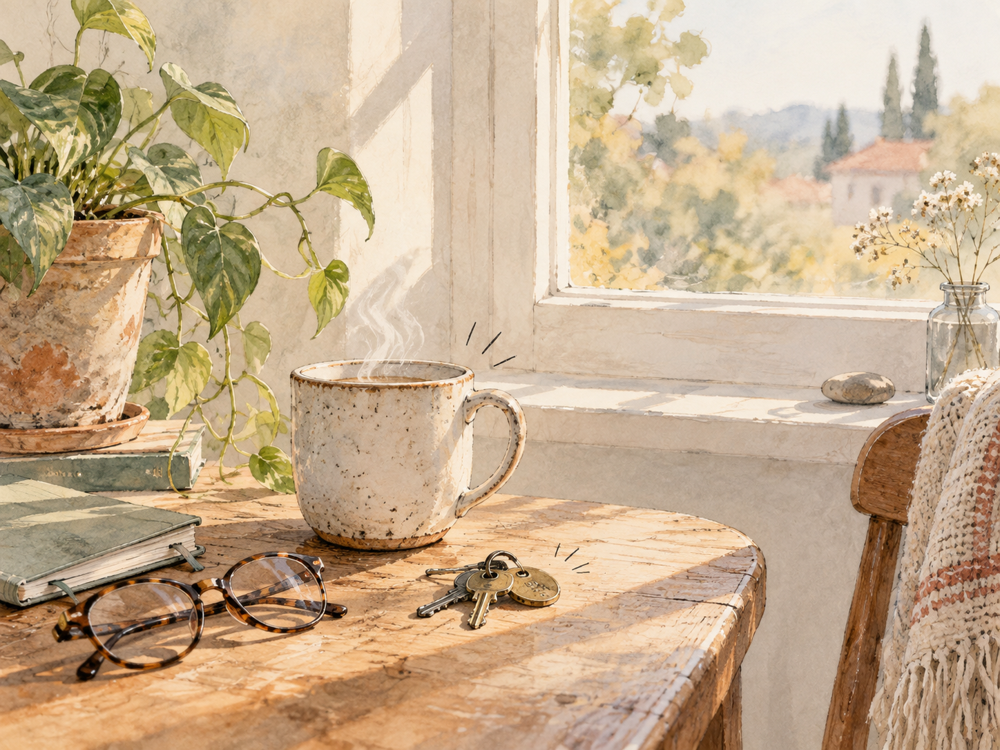
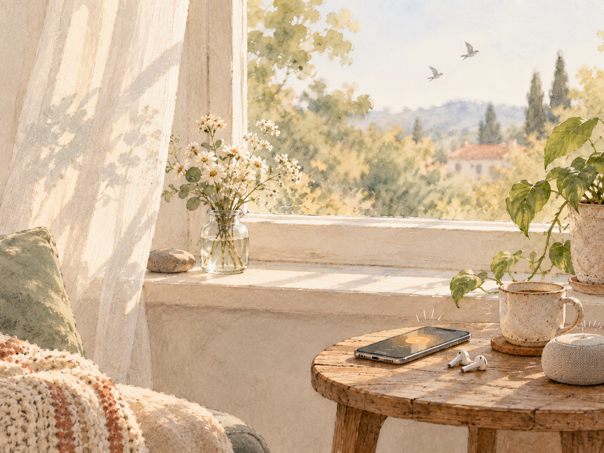
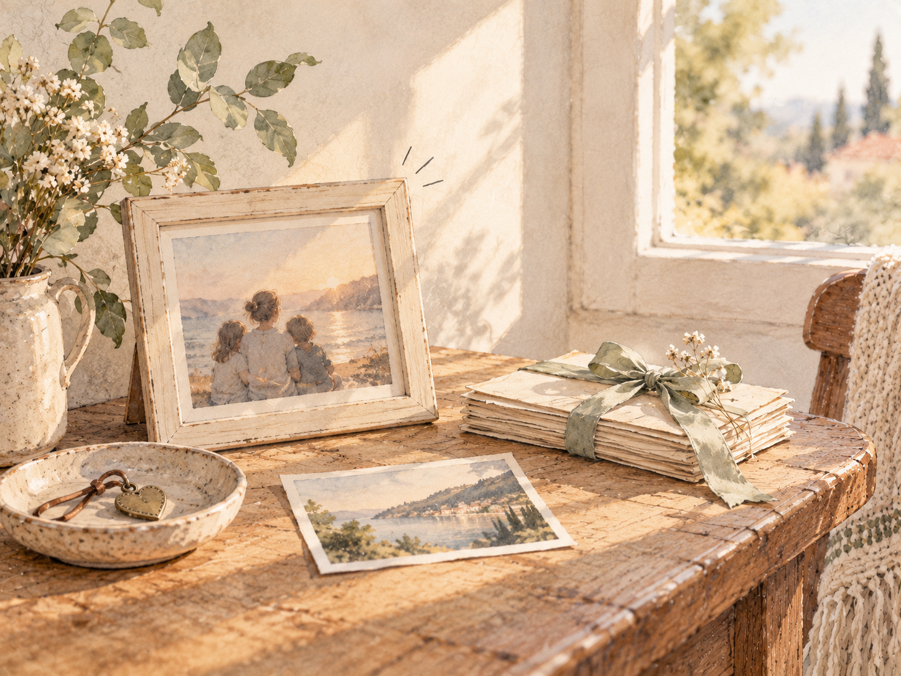
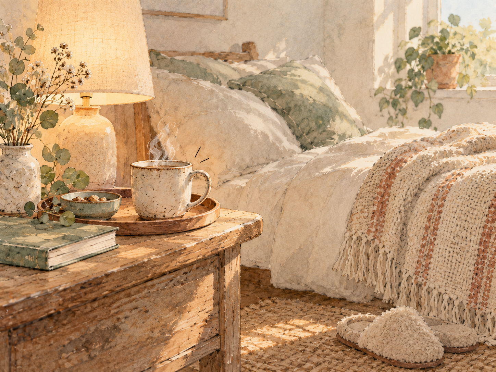
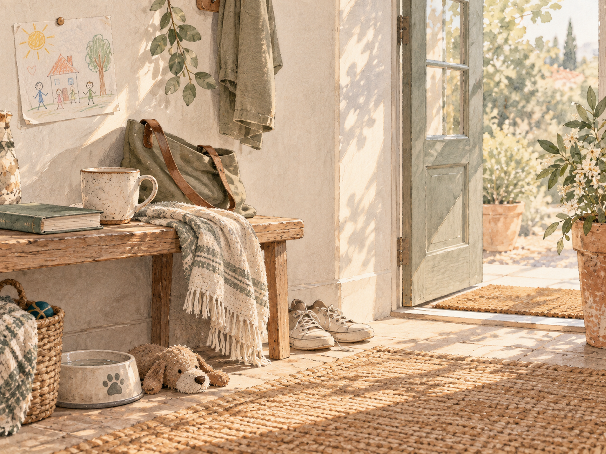
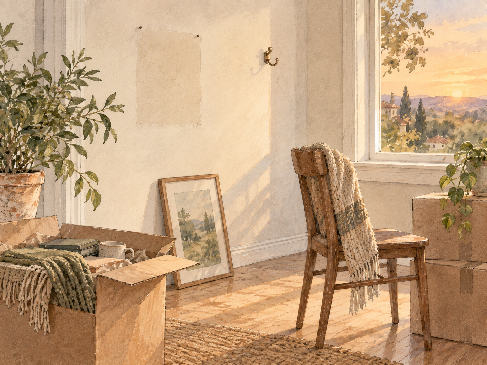
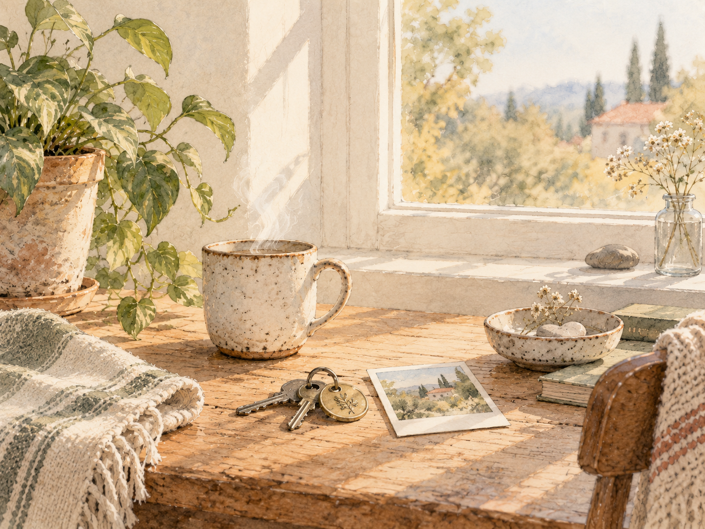

A Cozy Reflection Daily journey
Feeling a Little Lost?
A 7-Day Challenge to Notice What Still Feels Like Home
Seven reflections. Seven pauses. Take them at your own pace.
Sometimes feeling lost does not mean we have wandered very far.
We may still wake in the same room, move through familiar routines, hear the same sounds, and recognize everything around us.
Yet somehow, life can begin to feel a little unfamiliar.
Perhaps finding our way does not always begin with a large answer.
Sometimes it begins by noticing what has quietly remained.
Begin the JourneyWhat Might This Journey Help You Notice?
Maybe you have been feeling a little disconnected lately, even from places, people, or routines that once felt familiar.
Maybe you have wondered:
Why can I be at home and still feel a little lost?
What still comforts me when so much feels different?
Which ordinary parts of my life have I stopped noticing?
What has changed about the place, people, or routines I once called home?
What does home actually mean to me now?
This journey will not try to answer those questions for you.
Instead, it offers seven different ways of looking again at the objects around you, the sounds woven into your days, the memories carried by ordinary things, the rituals your body remembers, the lives that share space with yours, and the changes that may have quietly reshaped what home means.
You may not reach one perfect definition.
But perhaps you will begin to notice a little more of what still feels familiar, meaningful, comforting, or yours.
Seven Days, or Seven Pauses
You are welcome to spend time with one reflection each day, but there is no schedule you need to keep.
Pause when something deserves more time.
Skip a day if life becomes busy.
Return when you have room for it.
You might finish this journey in seven days.
Or you might carry it with you for much longer.
Think of these less as seven deadlines and more as seven invitations to notice.
Take the Reflections With You
You do not have to complete this journey here or all at once.
Take the seven reflections somewhere that already feels like yours, or keep the journey close so you can return whenever you are ready.
Copy all seven reflection questions, the closing reflection, and a link back to this journey.
Paste them into Notes, Notepad, a private document, or wherever you prefer to write.
Keep the link somewhere useful or send the journey to someone who might appreciate it.
If your browser does not support sharing, the link will simply be copied for you.
Your reflections stay with you. Cozy Reflection Daily does not collect what you write.
This space offers the question.
Your own space holds the answer.
Before You Begin
There is nothing you need to solve here.
You do not have to find yourself again in seven days.
You do not have to make peace with every change.
You do not have to arrive at a perfect definition of home.
For now, simply notice.
A familiar object.
A sound you barely hear anymore.
A ritual your hands seem to remember on their own.
The small traces of people, pets, memories, and everyday life around you.
Perhaps feeling lost does not always mean everything familiar has disappeared.
Sometimes we have simply been moving too quickly, carrying too much, or looking elsewhere for so long that we stopped noticing what was quietly beside us.
And if nothing immediately feels meaningful, that is okay too.
There is no answer you are expected to find before you begin.
Day 1
Notice
Look again at something you pass every day.
Some things become almost invisible simply because they have been beside us for so long.
- A chair in the same corner
- The mug you reach for without thinking
- Keys resting in their usual place
- A small mark on the wall
- A plant leaning toward the same window
- A pet toy that somehow always ends up under the furniture
- A crayon, pair of glasses, charger, or little object left where life happened to leave it
None of these things need to be beautiful or important.
Sometimes familiarity itself makes us stop seeing what has quietly become part of our world.
Today’s Invitation
Choose one ordinary thing you normally pass without much thought.
Spend a little time looking at it as though you had not really noticed it before.
Notice its shape.
Its texture.
The signs of use.
Where it sits.
What usually happens around it.
You do not need to discover anything profound.
Just give your attention to something that usually receives very little of it.
A Question to Carry
What has become so familiar to me that I forgot it was part of what made this place feel like mine?

Day 2
Listen
Notice the sounds that belong to your life.
Every home has a soundscape, even when we rarely stop long enough to hear it.
- The hum of an electric fan
- A kettle beginning to boil
- A phone alarm starting another morning
- The small beep or vibration of a smartwatch
- A familiar ringtone or message notification
- Footsteps, conversation, or movement somewhere nearby
- A pet walking across the floor, traffic beyond the window, or the sounds of a neighborhood carrying on outside
Some sounds are comforting.
Some remind us that life is busy.
Some interrupt us so often that we barely hear them anymore.
Yet even the sounds we once considered ordinary can become deeply recognizable parts of a particular season of life.
Today’s Invitation
For a few minutes, simply listen.
Notice the quiet sounds and the busy ones.
You do not have to decide which ones are peaceful and which ones are distracting.
Choose one that feels unmistakably connected to the life you are living now.
Let yourself hear it before moving on.
A Question to Carry
Which ordinary sound would I recognize as part of my life even with my eyes closed?

Day 3
Remember
Find something that carries more history than it shows.
Some objects would look completely ordinary to anyone else.
- An old shirt
- A chipped dish
- A photograph beginning to fade
- A school souvenir tucked somewhere out of sight
- A handwritten recipe or note
- A toy a pet once loved
- A ticket, small gift, or keepsake from a time you rarely think about anymore
Their value is not always in what they are.
Sometimes it is in everything that happened around them.
A simple object can quietly hold an earlier home, an old friendship, a person we love, a version of ourselves, or an ordinary afternoon we did not know we would remember.
Today’s Invitation
Find one thing that has stayed with you long enough to gather a story.
Hold it if you can.
Look at the places where time has touched it.
Then try to remember more than the event connected to it.
Remember who you were then.
What your days felt like.
Who was around you.
What you did not yet know.
A Question to Carry
If this object could remember for me, what part of my life would it refuse to let disappear?

Day 4
Comfort
Notice a ritual your body already knows.
Comfort does not always arrive as a feeling.
Sometimes it arrives as a sequence.
- The way you prepare your coffee or breakfast
- Where your slippers wait when you come home
- How you arrange your pillow before sleeping
- Feeding a pet at roughly the same hour
- Turning on one particular lamp when evening begins
- Checking the door before bed
- Preparing something for your child, partner, family member, housemate, or simply for yourself
We repeat these little actions until our hands seem to remember them before our minds do.
Perhaps that is one of the quieter ways a place becomes familiar.
We learn how to move inside it.
Today’s Invitation
Choose one routine you normally perform without thinking very much about it.
Do it a little more slowly today.
Notice what your hands reach for.
Where you stand.
Which step naturally follows the one before it.
See if there is any comfort hiding inside the familiarity.
A Question to Carry
What small ritual has been caring for me so quietly that I stopped recognizing it as comfort?

Day 5
Belonging
Look for the traces of life around you.
A home often carries evidence of the lives that move through it.
- Someone’s usual cup
- Shoes left near a doorway
- Pet hair on a favorite chair
- A child’s drawing resting somewhere it was never meant to stay
- A half-finished snack
- A charger that somehow belongs permanently to the same outlet
- A blanket, book, bag, photograph, or other possession that quietly tells you who spends time here
Some of these traces can be comforting.
Some are messy.
Some are mildly annoying.
Some become precious only after they are gone.
And belonging does not require a crowded home.
If you live alone, your space can still carry evidence of relationship.
A gift from someone you love.
A pet waiting for you.
Something left behind after a visitor came over.
A photograph.
A message on your phone.
Or simply the routines and choices that have slowly made the space unmistakably yours.
Today’s Invitation
Notice one small piece of evidence that a life has touched your space.
It may belong to someone living beside you, someone who visits, a pet, someone you remember, or yourself.
Do not look for the most sentimental thing in the room.
Look for something ordinary.
Something that usually escapes attention.
A Question to Carry
Whose presence, including my own, has quietly become part of what home means to me?

Day 6
Change
Notice what home no longer looks like.
Homes change because lives change.
- Furniture moves
- Children grow
- Pets age
- Rooms are repainted
- Routines disappear and new ones begin
- Someone leaves or someone arrives
- A once busy home becomes quieter, or a quiet home becomes fuller
Sometimes nothing dramatic happens at all.
Yet one day we realize that the version of home we remember no longer exists exactly as it did.
That realization can bring relief.
It can bring gratitude.
It can also hurt.
Sometimes feeling lost begins when part of us keeps asking the present to resemble a place, relationship, routine, or season that has already changed.
Acknowledging that does not mean we have to stop loving what came before.
Today’s Invitation
Think of one thing about home that is different now.
Try not to immediately decide whether the change was good or bad.
For a moment, simply let both of these things be true:
Something is different now.
Something about it still matters to me.
You do not need to make peace with the change today.
Noticing it is enough.
A Question to Carry
What have I been trying to return to, even though home itself has already changed?

Day 7
Return
Ask what still feels like home now.
Over these reflections, you have looked at ordinary objects, listened to familiar sounds, revisited memories, noticed rituals, considered the lives around you, and made room for change.
Perhaps none of those things alone can define home.
Maybe home has never been only one room, one address, one person, or one version of life.
Perhaps it is also made from smaller pieces.
- A sound your body recognizes
- An object that remembers with you
- A ritual that brings familiarity to an ordinary day
- The traces of people or animals whose lives have touched yours
- A place that changed and still matters
- A version of yourself that once belonged somewhere different
- Something in the present that you are only beginning to recognize
Today’s Invitation
Look back at what you noticed along the way.
Choose three things that surprised you by how much they mattered.
They can be small.
Especially if they are small.
Then finish this sentence in whatever way feels true today:
Right now, home feels a little like...
You do not need a beautiful answer.
You do not even need a complete sentence.
Let whatever comes to mind be enough.
A Question to Carry
If home is allowed to change as I do, what am I beginning to recognize as home now?

Closing Reflection
Perhaps you arrived here because something had begun to feel unfamiliar.
Maybe the place around you had not changed very much, but you had.
Maybe someone, something, or some version of life you once associated with home is no longer here in quite the same way.
Or perhaps nothing obvious happened at all.
You simply found yourself moving through familiar days while feeling a little distant from them.
If these reflections brought comfort, let that comfort stay.
If they brought gratitude, you do not have to make it larger than it is.
And if something unexpectedly ached, you do not have to turn that ache into a lesson before you are ready.
Sometimes noticing what feels like home also means noticing what we miss.
Sometimes it means realizing how much an ordinary thing mattered only after we finally stopped long enough to see it.
And sometimes it means discovering that home is changing with us.
Over these seven pauses, perhaps you did not find one answer.
Instead, you found pieces.
A sound your life recognizes.
An object carrying years inside it.
A ritual your hands remember.
The quiet evidence of another life beside yours.
Something that changed.
Something that stayed.
Something you did not realize you still loved.
Perhaps home has never been one perfect place we are supposed to find and remain inside forever.
Maybe it is something we keep learning to recognize in places, people, memories, routines, and even in the person we are becoming.
And if you still feel a little lost after this journey, that does not mean you did it wrong.
You were never asked to arrive somewhere.
You were only invited to notice what was already walking beside you.
And perhaps, for now, that is enough.
One Last Question
What did you notice through this journey that you hope never becomes invisible to you again?
You do not need to know yet.
You can leave the question open.
Some reflections need a little longer to become words.